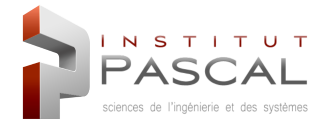
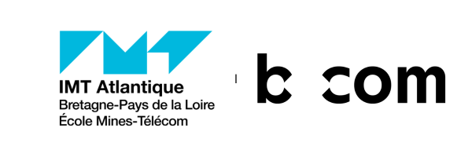

Yannis LOUMOUAMOU
Élève Ingénieur en Robotique & Intelligence Artificielle - IMT Atlantique
Passionné par les technologies de pointe, j'envisage de combiner Robotique, IA et Vision par Ordinateur pour créer des solutions innovantes et intelligentes.
Élève Ingénieur en Robotique & Intelligence Artificielle - IMT Atlantique
Passionné par les technologies de pointe, j'envisage de combiner Robotique, IA et Vision par Ordinateur pour créer des solutions innovantes et intelligentes.
Élève ingénieur en 2e année à IMT Atlantique, je me spécialise en Robotique et Interaction. Passionné par les technologies de pointe, je combine robotique, intelligence artificielle et vision par ordinateur pour créer des solutions innovantes et intelligentes.
Mon parcours m'a permis de travailler sur des projets concrets comme un stage en deep learning à l'Institut Pascal, axé sur l'adaptation de YOLOv8 pour la détection multimodale (RGB/SWIR), le développement d'un dispositif de localisation indoor basée vision (IRT B<>COM), et la conception d'une mini voiture autonome avec assistance au stationnement. Mon objectif est de contribuer au développement de technologies qui améliorent la vie quotidienne tout en repoussant les limites de l'innovation.
Conception et programmation de systèmes robotiques
Machine Learning & Deep Learning
Toujours à la recherche de nouveaux défis
IMT Atlantique est une grande école d'ingénieurs française reconnue internationalement pour son excellence académique et sa recherche de pointe. L'école forme des ingénieurs généralistes hautement qualifiés dans les domaines du numérique, de l'énergie et de l'environnement.
 IMT Atlantique, Nantes (ex Mines Nantes), Nantes
IMT Atlantique, Nantes (ex Mines Nantes), Nantes
Formation d'ingénieur généraliste avec spécialisation en Robotique et Interaction. Actuellement en 2e année du cycle ingénieur.
 Université Clermont Auvergne (UCA), Clermont-Ferrand
Université Clermont Auvergne (UCA), Clermont-Ferrand
Formation approfondie en mécatronique avec introduction aux réseaux de neurones et à l'intelligence artificielle. Stage de fin d'études en vision par ordinateur à l'Institut Pascal.
 Université Clermont Auvergne (UCA), Clermont-Ferrand
Université Clermont Auvergne (UCA), Clermont-Ferrand
Formation en mécatronique combinant mécanique, électronique et informatique. Acquisition de bases solides en systèmes embarqués et robotique.
Lycée Blaise Pascal, Clermont-Ferrand
Classe Préparatoire aux Grandes Écoles - Mathématiques, Physique et Sciences de l'Ingénieur. Formation intensive préparant aux concours d'entrée des grandes écoles d'ingénieurs.
 Institut Pascal (UMR 6602 CNRS), Clermont-Ferrand
Stage de fin d'études sur l'adaptation de YOLOv8 pour la détection d'objets multimodale (RGB/SWIR), sous la supervision de Dr Mathieu Labussière. Exploration de deux méthodes de spécialisation de modèles : fine-tuning des modèles YOLOv8x, YOLOv8l et YOLOv8n pour la détection routière dans le SWIR, et knowledge distillation pour transférer les connaissances vers des architectures légères.
COM et IMT Atlantique" loading="lazy"> IRT B<>COM & IMT Atlantique
Projet de diplomation en collaboration entre IRT B<>COM et IMT Atlantique. Développement d'un système de localisation indoor basé vision en équipe de 8 étudiants. Conception et implémentation d'un dispositif de navigation utilisant la vision par ordinateur pour la localisation précise en environnement intérieur.
Vice-Trésorier en charge des partenariats
Association Fédérative Nationale des Étudiants Universitaires Scientifiques. Participation active aux événements et initiatives visant à promouvoir la diversité et l'inclusion dans l'enseignement supérieur. En tant que Vice-Trésorier, je gère les partenariats et la trésorerie de l'association.

Secrétaire & Membre Fondateur
Association étudiante de robotique de Clermont-Ferrand. En tant que membre fondateur et secrétaire, je participe activement à l'organisation de projets de robotique collaborative, au développement de compétences techniques et au partage de connaissances avec la communauté locale.
Développement d'un dispositif de localisation indoor basée vision dans le cadre d'un projet IRT B<>COM. Système de navigation utilisant la vision par ordinateur pour la localisation précise en environnement intérieur.
Projet de fin de licence : conception et développement d'une mini voiture autonome avec système d'assistance au stationnement. Implémentation de deux modes : créneau automatique et bataille. Intégration de capteurs ultrasons, algorithmes de navigation et contrôle embarqué avec Arduino.
Adaptation de YOLOv8 pour la détection d'objets multimodales (RVB/SWIR). Développement de modèles de deep learning pour la fusion de données visuelles et infrarouges, optimisé pour applications industrielles.
Participation au WaveGame Challenge organisé par Wavestone, un défi de programmation compétitif axé sur la résolution de problèmes algorithmiques complexes en équipe de 6 étudiants d'IMT Atlantique. Mise en pratique de compétences en algorithmique, optimisation et pensée logique dans un environnement compétitif.
Téléchargez mon CV pour obtenir une vue d'ensemble détaillée de mon parcours, de mes expériences et de mes compétences.
Mes statistiques et contributions sur GitHub en temps réel